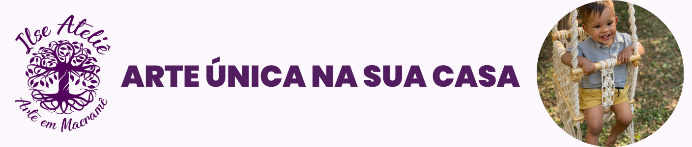
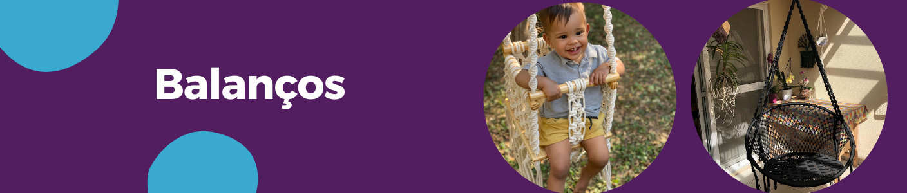
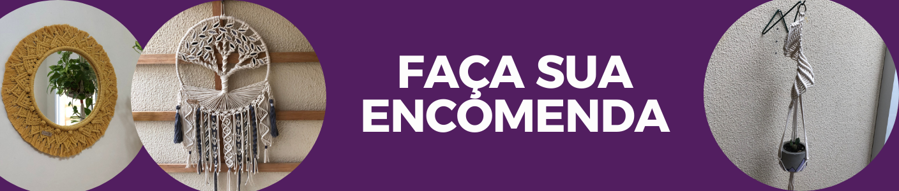

Quem sou eu
Ilse Barradas
Trabalhei como professora e coordenadora pedagógica durante muitos anos. Desde 2021, quando me aposentei, tenho me dedicado ao Macramê, arte que aprendi há mais de 20 anos. Criar peças em Macramê tem sido uma terapia e um imenso prazer. O Ilse Ateliê produz peças com muito cuidado, carinho e dedicação para trazer aconchego ao seu cantinho.